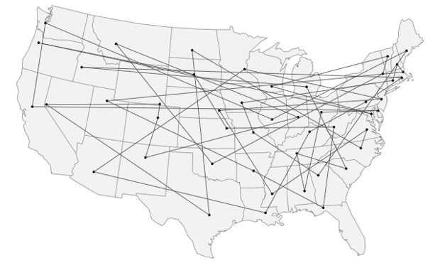
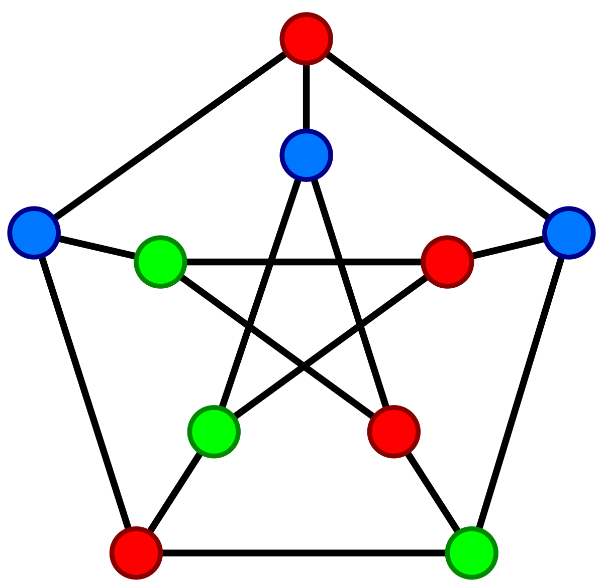

My resume is embedded above. You can also download it here:
The Traveling Salesman Problem (TSP) is a classic optimization problem in computer science and operations research. It involves finding the shortest possible route that visits a set of cities and returns to the origin city, ensuring that each city is visited exactly once.
The TSP is NP-hard, meaning that no known algorithm can solve it in polynomial time for all instances. However, various heuristic and approximation algorithms exist to find near-optimal solutions for practical applications.
One such approximation algorithm is the Christofides algorithm, which guarantees a solution within 1.5 times the optimal length for metric TSP instances.
The image below illustrates the types of paths generated by the Traveling Salesman Problem (TSP) algorithm.
The Christofides algorithm follows the following steps:
My implementation of the algorithm is slightly modified, following these steps instead:
The benefit of my implementation is that it reduces the time complexity of the algorithm. Christofides algorithm has a time complexity of O(n^3), while my implementation has a time complexity of O(n^2 log n).
The code is available on GitHub: Christofides-TSP-approximation
This is a simple project using SDL2 to visualize various sorting algorithms. The project allows users to see how different sorting algorithms work by visualizing the process of sorting a list of numbers.
The following sorting algorithms are implemented with visualization in this project:
The sorting algorithms visualization project provides an interactive way to visualize how different sorting algorithms work. Users can select an algorithm and see how it sorts a list of numbers step by step.
The code is available on GitHub: sorting-algorithm-visualization-sdl
A skiplist is a data structure that allows for fast search, insertion, and deletion operations. It consists of multiple layers of linked lists, where each layer acts as an "express lane" for the layer below it.
The skiplist is designed to maintain a balance between the number of elements in each layer and the height of the skiplist, ensuring efficient operations.
The skiplist data structure performs searches, insertions, and deletions in O(log n) time on average.
The skiplist visualization project provides an interactive way to visualize how a skiplist works. Users can insert and delete elements from the skiplist and see how the structure changes in real-time.
The code is available on GitHub: skiplist-visualization-sdl
The text compression tool is designed to compress and decompress text files using the huffman encoding algorithm. It aims to reduce the size of text files while preserving the original content.
The huffman encoding algorithm is a greedy algorithm that builds a binary tree based on the frequency of characters in the text. It assigns shorter codes to more frequent characters and longer codes to less frequent characters, resulting in a compressed representation of the text.
The text compression tool provides a user-friendly interface for compressing and decompressing text files. Users can select a file, choose a compression algorithm, and see the compressed output.
The code is available on GitHub: Huffman-encoding
The chromatic number of a graph is the minimum number of colors needed to color the vertices of the graph such that no two adjacent vertices share the same color. It is a fundamental concept in graph theory and has applications in scheduling, register allocation, and frequency assignment.
An example of such coloring of a graph is shown below, where the vertices are colored in such a way that no two adjacent vertices share the same color.
The code is available on GitHub: Chromatic Number
The Baylor University Innovation Fellows (UIF) program is a student-led initiative that aims to foster innovation and entrepreneurship within the university community. The program provides students with the opportunity to develop their leadership skills, collaborate on projects, and create a positive impact on campus.
I have the honor of being part of the inaugural cohort of Baylor UIF, which I have created a website for. The website serves as a platform to showcase the program's mission, goals, and achievements, as well as to provide information about the application process for prospective fellows.
The Baylor UIF website is built using HTML, CSS, and JavaScript. It is currently a work-in-progress and not available to the public yet. Feel free to view the code of the current state of the project.
The code is available on GitHub: BaylorUIF-website